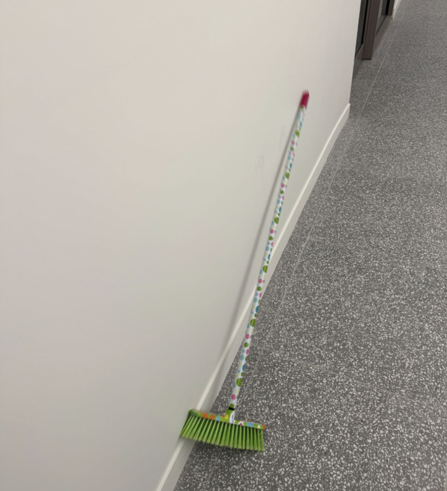
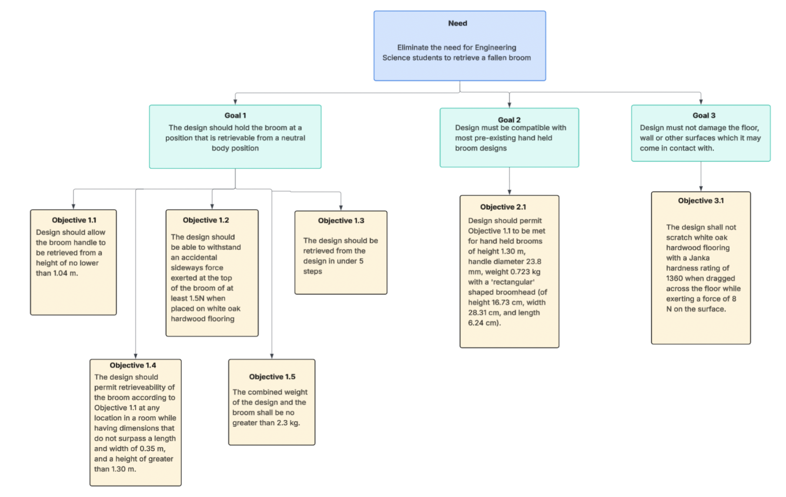
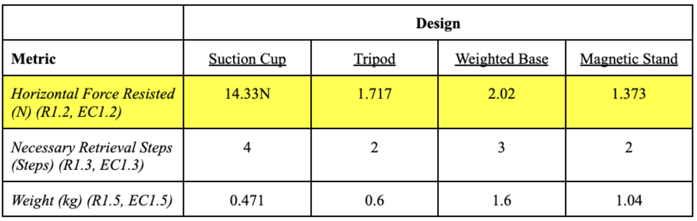
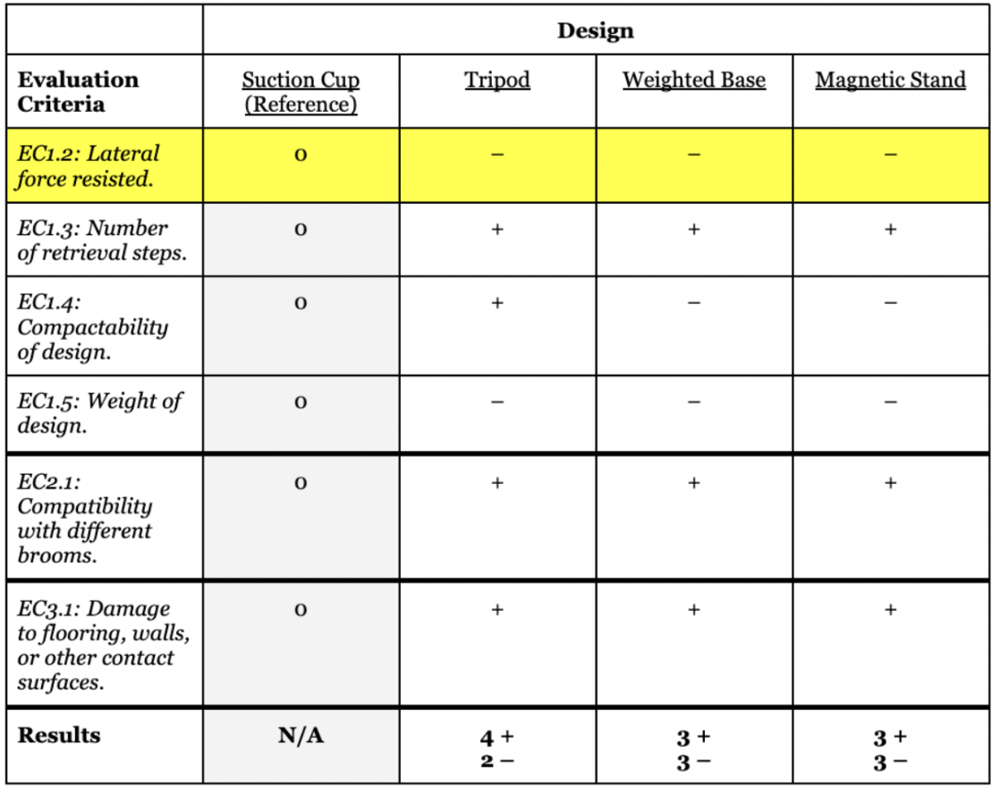
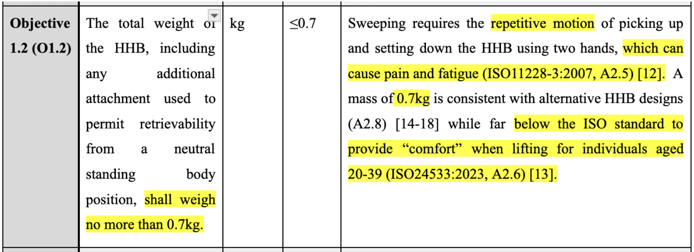
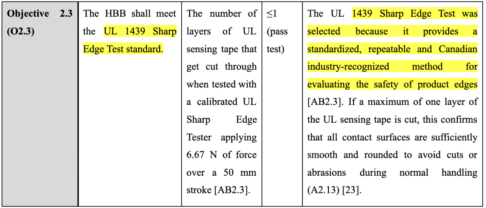

Project Summary
When individuals temporarily rest a hand-held broom (HHB) against a wall, it is prone to tipping due to its small base, uneven bristles, and long slender handle. Once the broom falls, the user must go through an inconvenient five-step process to retrieve it: bend over, grasp the broom, lift it, stand up, and rotate it.
Engineering Science students required a solution that prioritizes keeping the broom upright anywhere in a room. The design needed to eliminate the need to bend down by allowing retrieval from a neutral body position.
Our team recommended a moveable suction cup design that secures the broom to the floor when not in use. The design uses a foot-actuated handle to deploy the suction cup over the broom bristles. This mechanism creates a firm seal with the floor, such as white oak hardwood flooring, allowing the broom to be held upright.


- Foot-Actuated Deployment: An aluminum foot-actuated handle allows users to deploy and retract the suction cup from a standing neutral position, meaning the broom handle can be retrieved from a height no lower than 1.04 m.
- High Force Resistance: The suction cup design can withstand a maximum applied horizontal force of 14.33 N, ensuring it remains upright when accidentally bumped.
- Optimized Material: The suction cup is made of nitrile, chosen for its high physical durability, tensile strength, resistance to scratching surfaces, and lower density compared to silicon.
- Compact Footprint: The design minimally extends outward from the broomhead by approximately 3.34 cm to avoid compromising compactability, with a maximum width of 35.00 cm.
Applying the Position
This project was one of my first times designing something for a community's needs. I learned that you can't just base an engineering design on what you personally like or assume will work. Instead, I had to collaborate with my team to actually prove which solution was the best fit. Going through the design process showed me the importance of working with a team to make design choices based on the Needs, Goals and Objectives (Figure 4) and concrete data rather than subjective opinions.

| Team Member |
|---|
| Jessica Torkos |
| Katie Di Gregorio |
| Alessandra Gaspari |
Converging with the Perry Model and a Critical Metric
The Perry Model is a framework for understanding cognitive development, which can be directly applied to how engineering teams evaluate ideas. In the Multiplicity stage, designers view all generated concepts as equally valid. However, effective convergence requires moving into Relativism, where solutions are judged by specific evidence and context, in order to reach a justified Commitment to a single design [1]. Identifying a critical metric early in this process is the key to shifting a team away from personal preference and toward an evidence-based final decision.
During our convergence phase, my team compared four designs to determine which would best prevent Engineering Science students from having to bend down to pick up a fallen broom. We identified our most critical metric as the greatest lateral force the design could resist, as this ultimately determined if the broom would remain upright (the defining success factor of our splartz). By calculating the lateral force capacity—where our suction cup design withstood 14.33 N compared to others failing under 2.02 N—we were able to use tools like a Pugh Chart to holistically evaluate the designs and choose the suction cup.


Advantages of a Critical Metric Focus
Shifts the team's mindset from Multiplicity (all ideas are equal) to Relativism, allowing designs to be judged based on data rather than opinion.
Helps resolve conflicts when evaluating complex tools like Pugh Charts. Even if a design scores lower on secondary metrics (like retrieval steps), a strong critical metric clearly highlights the most viable option.
Provides a clear, justified pathway to the final stage of the Perry Model, allowing the team to confidently commit to the design that best satisfies the core problem.
Limitations & Future Considerations
In this project, we recognized our critical metric only after narrowing our ideas down to four designs. Because it was identified late, we missed the opportunity to use it to filter or prioritize concepts right from the start.
Relying too heavily on one metric to filter ideas requires certainty that the chosen metric is actually the most important one, which may result in accidentally eliminating designs that are stronger in overall usability.
This analysis helped me bette understand how identifying a critical metric drives progress through the Perry Model. By recognizing lateral force capacity as the defining factor, my team shifted from treating all designs as equally valid to evaluating them through evidence-based criteria and committing to the suction cup design. Moving forward, I intend to identify my team’s critical metric much earlier in the process, specifically during Divergence. Establishing this criteria at the beginning of the Multiplicity stage will ensure it shapes our comparisons from the start, leading us to stronger, more justified final designs.
Diverging with the Lotus Blossom
The Lotus Blossom is a structured diverging tool designed to systematically expand a team's ideation capacity [2]. By placing a core functional theme at the center of a grid and expanding outward into interconnected sub-themes, it forces designers to generate a high volume of ideas. It deliberately shifts the focus away from immediate feasibility and instead prioritizes quantity and creative momentum, ensuring the design space is thoroughly explored.
My team deployed the Lotus Blossom to generate a massive variety of concepts for our design opportunity. Starting with our central function, we systematically peeled back multiple layers to produce sixty-four distinct solutions. The progression was clear: our innermost layers yielded easy, highly feasible ideas—like a simple broom clip. However, as the grid forced us outward, we had to rely on increasingly creative thinking, eventually proposing unconventional solutions like a dedicated personal robot. Compared to other diverging techniques we tested, this structured expansion allowed us to generate the highest volume of ideas.

Advantages of the Lotus Blossom
The technique guided idea generation across different types of claims. Our initial, center-grid ideas were safer and more grounded, while our branching ideas were more speculative.
This tool allowed us to express our ideas in writing and/or drawing form, allowing us to represent our ideas better.
Because we could generate so many idea, we did not put much thought into each individual idea, allowing us to generate a large number of ideas.
Limitations & Future Considerations
A tool that generates sixty-four ideas is only useful if those ideas are aimed at the right target. If the design space is not properly defined beforehand, the Lotus Blossom can result in a massive waste of time generating solutions for the wrong problem.
While generating a massive quantity of ideas provides excellent raw material for convergence, it can also create an overwhelming evaluation phase if the initial central themes are not tightly aligned with the project's core functions.
Analyzing this experience through the lens of claim types proved to me that diverging tools are essential for opening the design space, rather than prematurely limiting it to predictable outcomes. In future design work, I will prioritize rigorous scoping and ensure our core opportunity is well defined before deploying the Lotus Blossom.
Framing with Codes and Standards
In engineering design, codes and standards are formalized guidelines that establish minimum performance, safety, and quality thresholds [2]. While codes are legally binding rules adopted by governments, standards are technical practices developed by industry professionals. Rather than relying on assumptions or subjective opinions to determine what makes a design safe or functional, engineers use these documents to ensure safety, efficiency, and reliability. In my practice, I collaborate with the greater engineering community by using codes and standards to ground my designs in established human safety metrics rather than personal guesswork.
During the framing of our Praxis I project, my team used codes and standards to define the requirements for our broom-retrieval opportunity. Instead of subjectively guessing what design parameters would be acceptable, we used these guidelines to establish objective thresholds.
For example, we referenced ISO 11228-3:2007 (Ergonomics) [3] to establish that the repetitive motion of bending down to pick up a broom causes quantifiable pain, directly justifying our core objective to mitigate this motion. When defining our constraints, we avoided choosing arbitrary values and instead used ISO 24533:2023 [4] to cap the broom attachment's mass at 0.7 kg, as this standard explicitly defines the threshold for lifting comfort for individuals aged 20-39. Finally, rather than inventing our own subjective safety evaluations, we adopted the UL 1439 Sharp Edge Test [5] to provide a standardized, industry-recognized method for evaluating the safety of our product's edges. By utilizing these standards to address our stakeholder needs, we created a set of requirements that were grounded in reality and proven safety data.


Advantages of Using Codes for Framing
Shifts requirement generation from subjective guesses to established industry baselines, providing immediate, objective justification for our design constraints.
Standards represent the collective, pressure-tested knowledge of past engineers. Using them ensures the design protects the end-users by relying on the wisdom of the broader engineering network.
Defines the non-negotiable edges of the design space early on. This actually aids the Diverge phase, as we know exactly what constraints our "crazy" ideas must eventually fit within.
Limitations & Future Considerations
Codes and standards are often dense and technical. To extract the metrics or practice, it took significant time to navigate the documents and accurately interpret the language.
If codes and standards are not fully understood, they may be misapplied, leading to requirements that are either irrelevant or technically inaccurate for the specific project context.
Using codes and standards to frame my project’s requirements taught me the importance of grounding objectives in established practices and guidelines to ensure design safety and reliability. In future design work, I will prioritize researching relevant codes and standards at the beginning of the Frame phase to justify my requirements. Since reading these documents can be dense, I recommend seeking support if needed to make sure that they are accurately interpreted and applied to your project.